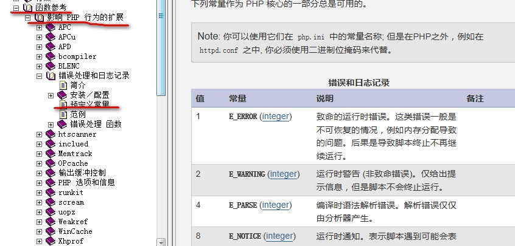

错误的分类：
- 语法错误：
程序运行之前，都要先检查语法，如果语法有错误，就会立即报错，并且不会去执行程序。 - 运行时错误：
语法检查通过后，运行程序时遇到的错误。通常分3种：提示性错误警告性错误致命错误 - 逻辑错误：
程序可以正常执行，但执行结果出错了。
错误的分级：
php语言中，将各种错误进行了不同级别的分类，并形成大约10几个级别的错误，这就是技术层面的错误分级。每一级别的错误，都有一个代号（系统内部的常量），如：
- 系统常见错误：
E_ERROR致命错误E_WARNING警告性错误E_NOTICE提示性错误 - 用户可自定义的错误：
E_USER_ERROR自定义致命错误E_USER_WARNING自定义警告性错误E_USER_NOTICE自定义提示性错误 - 其他：
E_STRICT严谨性语法检查错误E_ALL代表“所有错误”

错误的触发：
- 系统触发
系统触发的典型错误有这3种：E_ERROR致命错误（导致程序无法执行后续语句，如调用一个不存在的函数）E_WARNING警告性错误（输出错误提示，并继续执行后续代码，比如载入一个不存在的文件）E_NOTICE提示性错误（会输出错误提示，并继续执行后续代码，如使用了一个未定义变量） - 自定义触发
当我们处理某些数据时，数据不满足我们要求的条件，我们就可以在程序中主动去触发（创建）一个错误，以表明该数据的“非法性”。
|
|
E_USER_ERROR级别的错误也会终止后续语句的执行。
错误报告的显示问题（display_errors）：
所谓错误报告，就是网页上的错误提示。设置是否显示错误报告：
- 法一：在php.ini文件中设定
display_errors的值为on（显示），或off（不显示）。
前提条件是Apache已经装载了php.ini文件，即在httpd.config中加入如下一行:
PHPIniDir "php.ini文件的路径(所在目录)";
- 法二：直接在php脚本文件中使用函数
ini_set()设置1ini_set("display_errors",0 ); // 1代表显示
注意：
- 不管哪种形式，单词是一样的：
display_errors- 使用php.ini设置，影响的是全局（即所有php网页）
- 在某个脚本代码中使用
ini_set()设置，就只影响该脚本代码本身。- 脚本中的设置优先于php.ini中的设置
显示那些级别的错误报告(error_reporting)
前提是display_errors设置为On（或1）
法一：在php.ini文件中修改error_reporting的值，如：
E_ALL | E_STRICT目前代表所有错误（php5.3中的缺陷，php5.4已修改，能真正代表所有错误）
真正的所有错误应该写为：E_ERROR|E_STRICTE_NOTICE只显示notice级别的错误E_NOTICE|E_WARING|E_ERRORE_ERROR|E_USER_ERROR法二：在当前脚本代码中用
ini_set()函数设置,如：ini_set("error_reporting",E_NOTICE);ini_set("error_reporting",E_NOTICE|E_WARNING|E_ERROR);